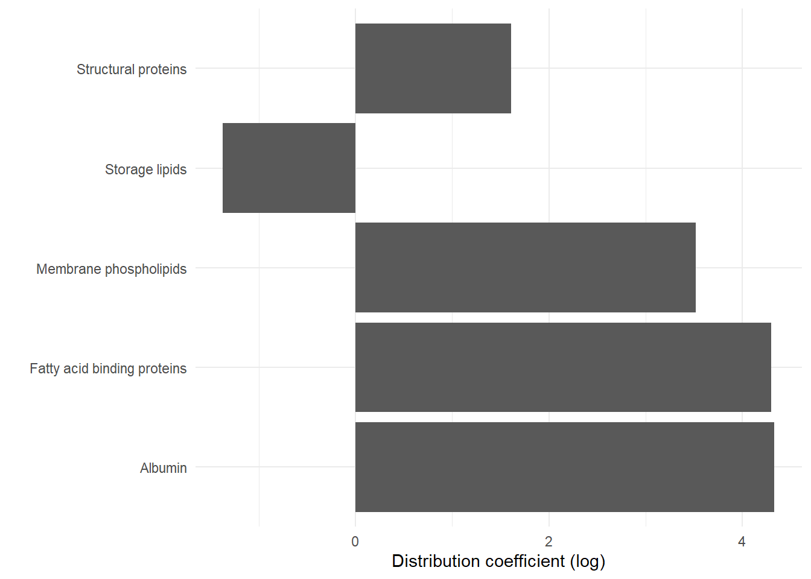
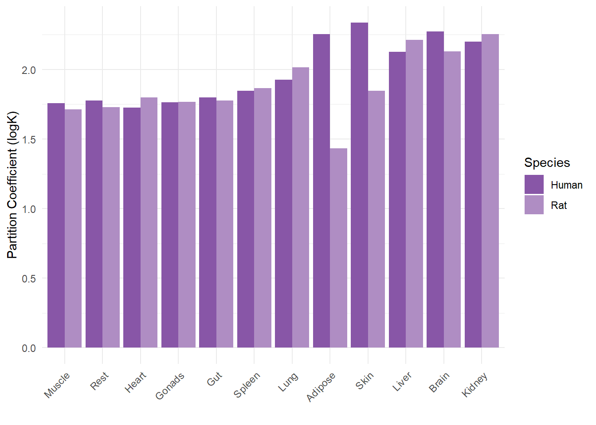
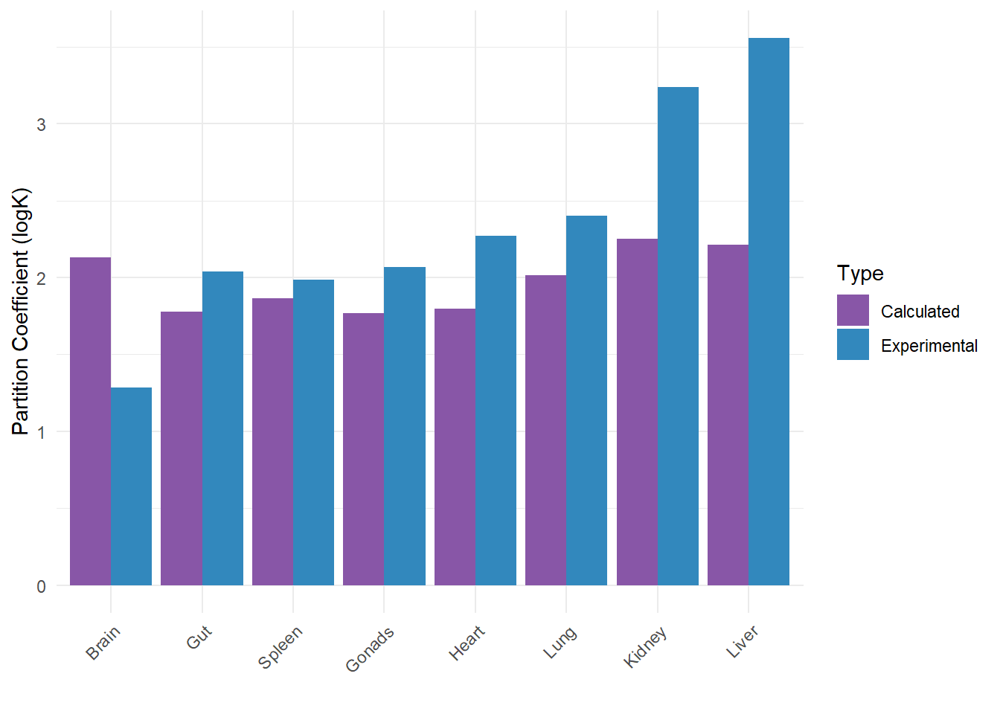
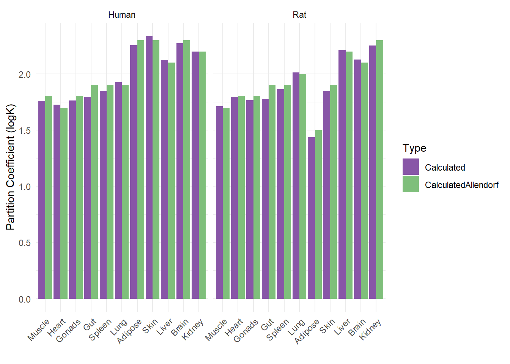
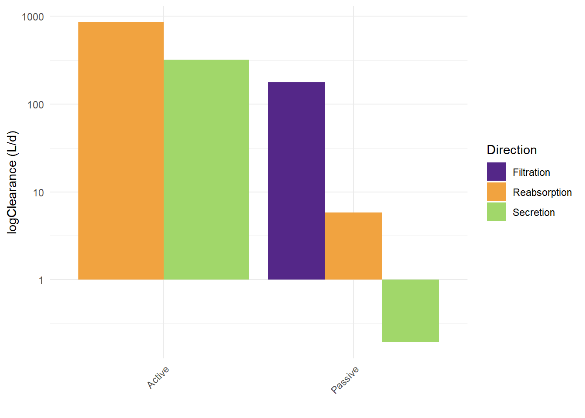

PFOA Model
1 Background
The aim of this project is to develop a mechanistic PFOA PBK model that uses in vitro data to determine the kinetic parameters. The use of in vitro data will enable the read-across to other PFASs, without the need of using animal studies.
When it comes to PFOA toxicokinetics, chronic exposure and predictions over a long duration are relevant. A secondary aim of this project is to explore whether life-stage modelling influences the predictions 1.
As a first step, the model was validated against a human study. Recently (Abraham et al. 2024) measured the pharmacokinetic parameters of PFOA after a single oral exposure of 3.96 μg. 2
2 PBK model Input
2.1 Physiological Parameters
Life-stage specific physiological parameters such as body weight, cardiac output, organ volumes and blood were derived from the equations described in (Ratier et al. 2024). Age-specific physiological parameters were then extracted, based on the age of the human validation study, for example those corresponding to the human subject in (Abraham et al. 2024).
As a more mechanistic kidney compartment is implemented in this model, the relevant physiological parameters were also modified accordingly. Those were derived from (Pletz et al. 2021), who initially suggested a multi-compartment kidney PBPK model for drugs. The updated kidney compartment in this model is divided in a tissue (vascular and cellular) and luminal (primary urine) sub-compartments, for the proximal tubule and the rest of the kidney.
2.2 Physicochemical parameters
Physicochemical parameters were taken from the ITRC PFAS Physical and Chemical Properties Table 4-1 Excel File, July 2023
2.3 Fraction unbound in plasma
Note
Add here information about how they experimentally derived the fraction unbound in plasma. Also add Susanna’s work.
2.4 Tissue - Plasma Partition coefficients
Tissue-plasma partition coefficients were calculated using experimental equilibrium matrix-water distribution coefficients. Previously, tissue-plasma partition coefficients determined from in vivo rat studies where used, however this approach brings a lot of uncertainties in the model, due to the physiological differences between rats and humans (Kudo et al. 2007). Recently, equilibrium tissue distribution coefficients were derived using PFOA tissue concentrations found in healthy human forensic autopsies of different tissues. This approach could be considered more physiologically relevant, however some limitations were the sizes of the tissue samples, that might not be representative of the whole tissue concentrations, as well as the variability in blood compositions due to blood coagulation in some of the samples (Nielsen et al. 2023).
An alternative approach to defining tissue-plasma partitionn coefficients, is the mechanistic tissue-plasma partition algorithms, that use physiochemical properties (such as Kow and pKa) to predict the chemical affinities tissue components (proteins or lipids), assuming that these depend on the lipophilicity and ionisation status of the chemical. The final steady-state tissue-plasma distribution is based on the differences in composition of the different tissues and their respective volume (Rodgers and Rowland 2007; Utsey et al. 2020; Peyret, Poulin, and Krishnan 2010). These mechanistic approach is very useful as it relies only on physicochemical and physiological data. However, these algorithms are limited to the chemical-space for which they have been validated for, and the uncertainties of the physicochemical data provided. Indeed, there’s a lot of variability in experimentally and in silico derived pKa for PFOA, while, given it’s amphiphilic nature taking Kow as a proxy to membrane affinity for example might be incorrect.
Recently, the binding affinity of PFOA to different tissue components (membrane phospholipids, storage lipids, structural proteins, albumin, fatty-acid binding protein) was derived experimentally (Allendorf, Goss, and Ulrich 2020). As shown in Figure 1, PFOA has high affinity for albumin and membrane phospholipids, while it’s binding affinity to structural proteins and storage lipids is lower. Noticeably, PFOA has a high affinity to fatty acid binding proteins, which are mainly found in the liver and kidney. 3
Tissue-plasma partition coefficients were calculated using the above mentioned distribution coefficients. Physiological data about the relevant tissue components were taken from literature (Allendorf, Goss, and Ulrich 2020; Utsey et al. 2020). To enable comparison of the calculated partition coefficients with the previously used in vivo derived ones, partition coefficients were derived for both rat and human tissues. As illustrated in Figure 2 (a) significant difference between the human and rat tissue-plasma partition coefficients is only observed for the adipose and skin tissues.
On the other hand, as seen in Figure 2 (c) , when comparing the rat calculated partition coefficients with those determined from the in vivo rat data, important differences can be observed for the brain, kidney and liver. The calculated brain-plasma partition coefficient is higher than the one derived from the in vivo data, while the partition coefficients for kidney and liver are lower. This is in agreement with the results of other literature data and can be expected due to the active processes involved in the biokinetics of PFOA (Allendorf, Goss, and Ulrich 2020; Nielsen et al. 2023).
Lastly, as shown in Figure 2 (b) the partition coefficients calculated in this paper match those calculated in the reference paper. Further validation of these coefficients against in vivo human and rat data was performed previously and was therefore not repeated here (Allendorf, Goss, and Ulrich 2020). The results of that work are found in Figure 3




2.5 Kinetic parameters
2.5.1 Renal clearance
Mechanisms involved in the renal clearance of PFOA are mainly glomerular filtration, active tubular secretion and re-absorption and passibe permeability. Several studies have showed that PFOA is a substrate of organic anion transporters OAT1, OAT3, OAT4 and URAT1, while recently the intrinsic clearance of PFOA by these transporters was determined in vitro, using either HEK293, or CHO cells transfected with the specific transporter (Yang, Glover, and Han 2010; Louisse et al. 2024; Ryu et al. 2024; Lin et al. 2023). PFOA can be actively secreted from the plasma to the primary urine by OAT1 and OAT3 transporters located in the proximal tubule and actively re-absorbed from the primary urine to the proximal tubule cells by OAT4 and URAT1 transporters. Active re-absorption by URAT1 was excluded from this study as both molecular docking simulations and in vitro transport studies showed a low affinity of PFOA for URAT (Yang, Glover, and Han 2010; Louisse et al. 2022; Lin et al. 2023). The available un-ionised PFOA can also freely diffuse between plasma, cells and the primary urine. The passive permeability of PFOA was recently derived in vitro and was extrapolated to an in vivo passive permeability clearance using equations Equation 4 and Equation 5. As demonstrated in Figure 4, active clearances greater than passive ones. One should also take into account that active reabsorption will actually be much higher as the fraction-unbound of PFOA in the filtrate is much higher than that in the plasma or tissues given the lower concentrations of albumin in the primary urine. Finally passive processes could be important in determining the half life of PFOA in specific populations, such as patients with chronic kidney disease (CKD), which has actually been linked to PFOA exposure. CKD leads to decreased GFR and changes in urinary pH, both of which alter the passive permeability of PFOA in the kidney (Huang and Isoherranen 2020). This is interesting to model, especially for the assessment of the risk of PFOA exposure in that population.
| Transporter | Vmax (nmol/min/mg prot) | Km (uM) | Cell type | Reference |
|---|---|---|---|---|
| OAT1 | 3.5 ± 0.9 | 185 ± 97 | HEK293+ | (Louisse et al. 2024) |
| OAT3 | 1.5 ± 0.4 | 90 ± 63 | HEK293+ | (Louisse et al. 2024) |
| OAT4 | 4.5 ± 0.5 | 47 ± 15 | HEK293+ | (Louisse et al. 2024) |
| OAT1 | 0.636 ± 0.101 | 65.76 ± 30.74 | HEK293+ | (Lin et al. 2023) |
| OAT3 | 0.629 ± 0.071 | 88.41 ± 27.08 | HEK293+ | (Lin et al. 2023) |
| OAT4 | 0.300 ± 0.026 | 9.95 ± 4.16 | HEK293+ | (Lin et al. 2023) |
| URAT1 | 1.520 ± 0.841 | 820.04 ± 620.25 | HEK293+ | (Lin et al. 2023) |
2.5.1.1 In vitro to in vivo extrapolation
Equations Equation 2 and Equation 1 were used for the in vitro to in vivo extrapolation of the renal clearances. A scaling factor (SF) was used to correct for the amount of proteins per cell and the amount of cells per gram kidney, as previously done Equation 3.
One should take into consideration uncertainties inherent to the in vitro data. The HEK293 cells used to determine the active clearances were over-expressing the transporters. Exact transporter protein expression in the cells was not reported, which could lead to an overestimation of those clearances in the model. Usually a relative expression factor (REF) or relative activity factor (RAF) is also used to correct for the differences in transporter protein expression between the cell system and the tissue, however this was not possible as this information was not provided in the studies where the intrinsic clearance data was taken from. Optimisation of the scaling factor could be used to correct for that.
\[ CLsecretion = (CLintOAT1 + CLintOAT3) * SF \tag{1}\]
\[ CLreabsorption = CLintOAT4 * SF \tag{2}\]
\[ SF = mgprotein.HEKcell * PTC.gKidney * REF * VPT \tag{3}\]
\[ CLpassive = Pint * SA * f.unionised.primary.urine \tag{4}\]
\[ Pint = Papp * f.unionised.experiment \tag{5}\]

2.5.2 Enterohepatic circulation / Biliary and faecal clearances
Previous models used biliary and faecal clearances from and in vivo study, of 0.194 and 0.004 L/d respectively (Fujii et al. 2015). PFOA was modelled to be directly cleared from the liver to gut via the biliary clearance and from the gut to the faeces via faecal clearance. No specific circulation back to the liver was modelled, other than the portal plasma flow.
PFAS are believed to undergo enterohepatic circulation in a similar manner as bile acids Figure 5, which in part could explain their long half-lives. For this, PFAS found in the intestinal lumen could be taken up to the portal blood via the OST transporter, then to the liver possibly by the NTCP transporter. In the liver, they could be excreted in the bile via BSEP, the same transporters as the one used by biliary acids. From bile they are excreted back to the intestine via the ASBT transporter, where they can go through the above-mentioned cycle again (Cao et al. 2022).

There is not enough mechanistic data confirming the above theory and, there are currently, no studies demonstrating the active transport of PFOA by BSEP, ASPT4 or OSTα/β5. The first study that looked into the uptake of PFOA via Caco-2 cells, identified a saturable process at low concentrations and a non saturable process at higher concentrations, which indicated both passive and active uptake of PFOA, Figure 6. The authors identified OATP transporters to be involved in the saturable process, for which they derived the Vmax and Km and which was also inhibited by sulfobromophthalein (BSP), an OATP inhibitor (see table below). One should however consider the human relevance of this process, given the high PFOA concentrations used in this study 1-500μM (Kimura et al. 2017). Recently a study on different intestinal models, fully characterised on their transporter protein expression, determined the apparent permeability (Papp) of different PFASs among which PFOA (Janssen et al. 2024). Papp values were very comparable across the tested intestinal models, which the authors attributed to passive permeability rather than transporter specific process, given that the transporter expression differences between the tested models (Janssen et al. 2024). Nevertheless, one should also note that gene expression of ASBT, OST and OATP transporters was indeed identified in all the systems, which could indicate their contribution to the overall PFOA uptake (Figure 7). PFOA uptake and efflux from/to the liver was recently studied using CHO cells over-expressing OATP1B1, 1B3, 2B1 and NTCP, transporters expressed in the basolateral membrane of liver cells, responsible for the active uptake of compounds from the portal blood (Lin et al. 2023). OATPs located in the basolateral membrane All the transporters, except NTCP, seemed to increase the uptake of PFOA. The respective kinetic properties are found in the table and Figure 8 below. The transport capacity of PFOA by NTCP was also shown in another study, however PFOA seems to have low affinity for the transporter (see table below) (Ruggiero et al. 2021).
| Papp value (× 10– 6 cm/s) | Cell/method | Reference |
|---|---|---|
| 7.31 ± 0.43 | EpiIntestinal | (Janssen et al. 2024) |
| 3.27 ± 0.45 | hiPSC-derived IEC | (Janssen et al. 2024) |
| 4.23 ± 0.41 | Caco-2 | (Janssen et al. 2024) |
| 1.46 ± 0.10 | HEK cells | (Ryu et al. 2024) |
| Peff.ionised 0.16 Peff.neutral 50 | Liposomes 6 | (Ebert et al. 2020) |
| 46.57 | Caco-2 derived from (Kimura et al. 2017) | (Lin et al. 2023) |
| Transporter | Vmax (pmol/min/mg prot.) | Km (uM) | Cell type | Reference |
|---|---|---|---|---|
| OATP2B1 | 0.457 ± 0.0204 | 8.3 ± 1.2 | Caco2 | (Kimura et al. 2017) |
| OATP1B1 | 2.305 ± 0.295 | 52.65 ± 23.28 | CHO+ | (Lin et al. 2023) |
| OATP1B3 | 2.694 ± 0.470 | 91.61 ± 47.70 | CHO+ | (Lin et al. 2023) |
| OATP2B1 | 1.493 ± 0.543 | 148.68 ± 132.89 | CHO+ | (Lin et al. 2023) |
| NTCP | 2.995 ± 1.482 | 458.72 ± 362.09 | HEK293+ | (Lin et al. 2023) |
| NTCP | 1.280 ± 0.014 | 1800 ± 400 | HEK293+ | (Ruggiero et al. 2021) |
Recently, the fraction reabsorbed by enterohepatic circulation was calculated based on the relative binding affinities of PFASs to the ASBT and NTCP transporters, compared to TCA, using molecular docking (Cao et al. 2022). Based on this method, a freab of 0.30 for PFOA was derived, assuming equal contribution of both transporters Figure 9. One should note that in the same study, the measured PFOA concentration in the bile of rats exposed to PFOA via a repeated gavage administration was minimal Figure 10.
Based on this data and in vivo data indicating that PFOA is well distributed in liver and plasma, one could assume that both passive and active processes are involved in the uptake and hepatobiliary kinetics PFOA. The newly suggested mechanism is that PFOA found in the intestinal lumen can both passively permeate or be taken up in the enterocytes via OATP2B17 and then permeate to the portal blood. Uptake of PFOA from the portal blood to the hepatocytes can be passive but also active, mainly mediated by OATP transporters as well. There is in vitro data to inform a transporter-mediated elimination process of PFOA to the bile, however given that PFOA has been found in the bile from in vivo studies [add references here] this process must exist.


Modelling approach:
3 References
Abraham, Klaus, Helena Mertens, Lennart Richter, Hans Mielke, Tanja Schwerdtle, and Bernhard H. Monien. 2024. “Kinetics of 15 Per- and Polyfluoroalkyl Substances (PFAS) After Single Oral Application as a Mixture A Pilot Investigation in a Male Volunteer.” Environment International 193 (November): 109047. https://doi.org/10.1016/j.envint.2024.109047.
Allendorf, Flora, Kai-Uwe Goss, and Nadin Ulrich. 2020. “Estimating the Equilibrium Distribution of Perfluoroalkyl Acids and 4 of Their Alternatives in Mammals.” Environmental Toxicology and Chemistry 40 (3): 910–20. https://doi.org/10.1002/etc.4954.
Cao, Huiming, Zhen Zhou, Zhe Hu, Cuiyun Wei, Jie Li, Ling Wang, Guangliang Liu, et al. 2022. “Effect of Enterohepatic Circulation on the Accumulation of Per- and Polyfluoroalkyl Substances: Evidence from Experimental and Computational Studies.” Environmental Science & Technology 56 (5): 3214–24. https://doi.org/10.1021/acs.est.1c07176.
Ebert, Andrea, Flora Allendorf, Urs Berger, Kai-Uwe Goss, and Nadin Ulrich. 2020. “Membrane/Water Partitioning and Permeabilities of Perfluoroalkyl Acids and Four of Their Alternatives and the Effects on Toxicokinetic Behavior.” Environmental Science & Technology 54 (8): 5051–61. https://doi.org/10.1021/acs.est.0c00175.
Fujii, Yukiko, Tamon Niisoe, Kouji H. Harada, Shinji Uemoto, Yasuhiro Ogura, Katsunobu Takenaka, and Akio Koizumi. 2015. “Toxicokinetics of Perfluoroalkyl Carboxylic Acids with Different Carbon Chain Lengths in Mice and Humans.” Journal of Occupational Health 57 (1): 1–12. https://doi.org/10.1539/joh.14-0136-oa.
Huang, Weize, and Nina Isoherranen. 2020. “Novel Mechanistic PBPK Model to Predict Renal Clearance in Varying Stages of CKD by Incorporating Tubular Adaptation and Dynamic Passive Reabsorption.” CPT: Pharmacometrics & Systems Pharmacology 9 (10): 571–83. https://doi.org/10.1002/psp4.12553.
Janssen, Aafke W. F., Loes P. M. Duivenvoorde, Karsten Beekmann, Nicole Pinckaers, Bart van der Hee, Annelies Noorlander, Liz L. Leenders, Jochem Louisse, and Meike van der Zande. 2024. “Transport of Perfluoroalkyl Substances Across Human Induced Pluripotent Stem Cell-Derived Intestinal Epithelial Cells in Comparison with Primary Human Intestinal Epithelial Cells and Caco-2 Cells.” Archives of Toxicology 98 (11): 3777–95. https://doi.org/10.1007/s00204-024-03851-x.
Kimura, Osamu, Yukiko Fujii, Koichi Haraguchi, Yoshihisa Kato, Chiho Ohta, Nobuyuki Koga, and Tetsuya Endo. 2017. “Uptake of Perfluorooctanoic Acid by Caco-2 Cells: Involvement of Organic Anion Transporting Polypeptides.” Toxicology Letters 277 (August): 18–23. https://doi.org/10.1016/j.toxlet.2017.05.012.
Kudo, Naomi, Ayako Sakai, Atsushi Mitsumoto, Yasuhide Hibino, Tadashi Tsuda, and Yoichi Kawashima. 2007. “Tissue Distribution and Hepatic Subcellular Distribution of Perfluorooctanoic Acid at Low Dose Are Different from Those at High Dose in Rats.” Biological and Pharmaceutical Bulletin 30 (8): 1535–40. https://doi.org/10.1248/bpb.30.1535.
Lin, Jieying, Sheng Yuan Chin, Shawn Pei Feng Tan, Hor Cheng Koh, Eleanor Jing Yi Cheong, Eric Chun Yong Chan, and James Chun Yip Chan. 2023. “Mechanistic Middle-Out Physiologically Based Toxicokinetic Modeling of Transporter-Dependent Disposition of Perfluorooctanoic Acid in Humans.” Environmental Science & Technology 57 (17): 6825–34. https://doi.org/10.1021/acs.est.2c05642.
Louisse, Jochem, Luca Dellafiora, Jeroen J. M. W. van den Heuvel, Deborah Rijkers, Liz Leenders, Jean-Lou C. M. Dorne, Ans Punt, Frans G. M. Russel, and Jan B. Koenderink. 2022. “Perfluoroalkyl Substances (PFASs) Are Substrates of the Renal Human Organic Anion Transporter 4 (OAT4).” Archives of Toxicology 97 (3): 685–96. https://doi.org/10.1007/s00204-022-03428-6.
Louisse, Jochem, Lorenzo Pedroni, Jeroen J. M. W. van den Heuvel, Deborah Rijkers, Liz Leenders, Annelies Noorlander, Ans Punt, Frans G. M. Russel, Jan B. Koenderink, and Luca Dellafiora. 2024. “In Vitro and in Silico Characterization of the Transport of Selected Perfluoroalkyl Carboxylic Acids and Perfluoroalkyl Sulfonic Acids by Human Organic Anion Transporter 1 (OAT1), OAT2 and OAT3.” Toxicology 509 (December): 153961. https://doi.org/10.1016/j.tox.2024.153961.
Nielsen, Flemming, Fabian C. Fischer, Peter M. Leth, and Philippe Grandjean. 2023. “Occurrence of Major Perfluorinated Alkylate Substances in Human Blood and Target Organs.” Environmental Science & Technology 58 (1): 143–49. https://doi.org/10.1021/acs.est.3c06499.
Peyret, Thomas, Patrick Poulin, and Kannan Krishnan. 2010. “A Unified Algorithm for Predicting Partition Coefficients for PBPK Modeling of Drugs and Environmental Chemicals.” Toxicology and Applied Pharmacology 249 (3): 197–207. https://doi.org/10.1016/j.taap.2010.09.010.
Pletz, Julia, Terry J. Allen, Judith C. Madden, Mark T. D. Cronin, and Steven D. Webb. 2021. “A Mechanistic Model to Study the Kinetics and Toxicity of Salicylic Acid in the Kidney of Four Virtual Individuals.” Computational Toxicology 19 (August): 100172. https://doi.org/10.1016/j.comtox.2021.100172.
Ratier, Aude, Maribel Casas, Regina Grazuleviciene, Remy Slama, Line Småstuen Haug, Cathrine Thomsen, Marina Vafeiadi, et al. 2024. “Estimating the Dynamic Early Life Exposure to PFOA and PFOS of the HELIX Children: Emerging Profiles via Prenatal Exposure, Breastfeeding, and Diet.” Environment International 186 (April): 108621. https://doi.org/10.1016/j.envint.2024.108621.
Rodgers, Trudy, and Malcolm Rowland. 2007. “Mechanistic Approaches to Volume of Distribution Predictions: Understanding the Processes.” Pharmaceutical Research 24 (5): 918–33. https://doi.org/10.1007/s11095-006-9210-3.
Ruggiero, Melissa J., Haley Miller, Jessica Y. Idowu, Jeremiah D. Zitzow, Shu-Ching Chang, and Bruno Hagenbuch. 2021. “Perfluoroalkyl Carboxylic Acids Interact with the Human Bile Acid Transporter NTCP.” Livers 1 (4): 221–29. https://doi.org/10.3390/livers1040017.
Ryu, Sangwoo, Emi Yamaguchi, Seyed Mohamad Sadegh Modaresi, Juliana Agudelo, Chester Costales, Mark A. West, Fabian Fischer, and Angela L. Slitt. 2024. “Evaluation of 14 PFAS for Permeability and Organic Anion Transporter Interactions: Implications for Renal Clearance in Humans.” Chemosphere 361 (August): 142390. https://doi.org/10.1016/j.chemosphere.2024.142390.
Utsey, Kiersten, Madeleine S. Gastonguay, Sean Russell, Reed Freling, Matthew M. Riggs, and Ahmed Elmokadem. 2020. “Quantification of the Impact of Partition Coefficient Prediction Methods on Physiologically Based Pharmacokinetic Model Output Using a Standardized Tissue Composition.” Drug Metabolism and Disposition 48 (10): 903–16. https://doi.org/10.1124/dmd.120.090498.
Yang, Ching-Hui, Kyle P. Glover, and Xing Han. 2010. “Characterization of Cellular Uptake of Perfluorooctanoate via Organic Anion-Transporting Polypeptide 1A2, Organic Anion Transporter 4, and Urate Transporter 1 for Their Potential Roles in Mediating Human Renal Reabsorption of Perfluorocarboxylates.” Toxicological Sciences 117 (2): 294–302. https://doi.org/10.1093/toxsci/kfq219.
Footnotes
currently we have adult, could be relevant to include child as well?↩︎
They observed (.. add toxicokinetic parameters here)↩︎
To use this we need to find a way to convert it to normal Papp.., an option could also be to derive Papp from the Km/w↩︎
ASBT is located in the apical side of enterocyte and is reponsible for the uptake of compounds, from the lumen↩︎
OSTα/β is located in the basolateral membrane of enterocytes and it’s a bidirectional transporter↩︎
To use this we need to find a way to convert it to normal Papp.., an option could also be to derive Papp from the Km/w↩︎
To my knowledge only OATP2B1 has been found in the human intestine.↩︎